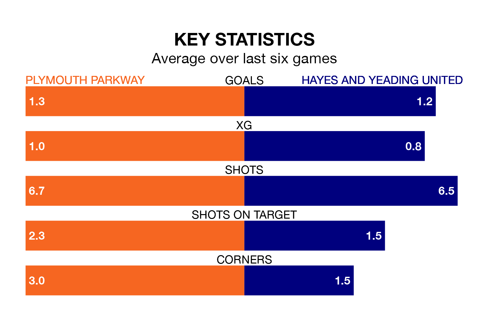

Plymouth Parkway welcome Hayes and Yeading United on Saturday looking to pick up points to end their three-game losing streak.
Plymouth Parkway's struggles have left them with seven points from their last six Southern League Premier – South matches, while their opponents have earned the same number from a possible 18.
Plymouth Parkway are 19th in the table after 25 games, of which they have won eight and drawn seven, earning 31 points.
Hayes & Yeading are two places ahead of the hosts in 17th, with nine wins and 10 draws putting them on 37 points.
With 50 goals in 33 games so far this season, United are scoring at below the league average rate with 1.5 goals per game. But they are conceding fewer than average too, letting in 54 goals at a rate of 1.6 per game.
Plymouth Parkway are also below average scorers, with 1.6 goals per game, compared to a league average of 1.7. They have conceded 1.5 goals per game.
In the last three years, Plymouth Parkway and Hayes & Yeading have played each other on three occasions. Plymouth Parkway won two of them and Hayes & Yeading one.
Their last meeting was on January 23, when Plymouth Parkway won 2-0 away.
Plymouth Parkway's last match was on March 9, a 3-0 loss against Swindon Supermarine.
Hayes & Yeading lost 3-0 against Gosport Borough last time out, also on March 9.
Updated: 15:10 (UTC), 15/03/24